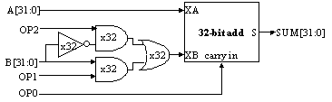

Machine language
Problem 1.
Hand-compile the following C fragments into Beta assembly language.
You can assume that the necessary storage allocation for each variable
or array has been done and that a UASM label has been defined that
indicates the first storage location for that variable or array.
All of the variables are stored in main memory (in the first 32k
bytes of main memory so that they can be addressed by a 16-bit literal).
You can also assume that all variables and arrays are C integers,
i.e., 32-bit values.
-
 Explain what Beta assembly language instruction(s) are needed
to load the value of a variable that has been allocated in the first
32k bytes of main memory (i.e., at an address less than 0x8000).
How would your answer change if the variable was located at address
outside this range (e.g., at address 0x12468).
Explain what Beta assembly language instruction(s) are needed
to load the value of a variable that has been allocated in the first
32k bytes of main memory (i.e., at an address less than 0x8000).
How would your answer change if the variable was located at address
outside this range (e.g., at address 0x12468).
-
a = b + 3*c;
-
if (a > b) c = 17;
-
if (sxt_short) { b = (b << 16) >> 16; }
-
cjt->salary += 3752;
Assume that the salary component of the structure pointed to by
cjt has a byte offset of 8 from the beginning of the structure.
-
sum = 0;
for (i = 0; i < 10; i = i+1) sum += i;
Problem 2.
In block structured languages such as C or Java, the scope of a
variable declared locally within a block extends only over that block,
i.e., the value of the local variable cannot be accessed outside the
block. Conceptually, storage is allocated for the variable when the
block is entered and deallocated when the block is exited. In many
cases, this means the compiler if free to use a register to hold
the value of the local variable instead of a memory location.
Consider the following C fragment:
int sum = 0;
{ int i;
for (i = 0; i < 10; i = i+1) sum += i;
}
-
Hand-compile this loop into assembly language, using registers
to hold the values of the local variables "i" and "sum".
-
Define a memory access as any access to memory, i.e.,
instruction fetch, data read (LD), or data write (ST). Compare
the number of total number of memory accesses generated by executing the
optimized loop with the total number of memory access
for the unoptimized loop (part G of the preceding problem).
-
Some optimizing compilers "unroll" small loops to amortize the
overhead of each loop iteration over more instructions in the body
of the loop. For example, one unrolling of the loop above would be
equivalent to rewriting the program as
int sum = 0;
{ int i;
for (i = 0; i < 10; i = i+2) { sum += i; sum += i+1; }
}
Hand-compile this loop into Beta assembly language and compare the
total number of memory accesses generated when it executes to the
total number of memory accesses from part (1).
Problem 3.
-
Hand-assemble the following Beta assembly language program:
I = 0x5678
B = 0x1234
LD(I,R0)
SHLC(R0,2,R0)
LD(R0,B,R1)
MULC(R1,17,R1)
ST(R1,B,R0)
-
What C statement might have been compiled into the code fragment
above?
Problem 4.
Hand-assemble the following Beta branch instructions into their
binary representation:
-
foo: BR(foo) [recall that BR(label) = BEQ(R31,label,R31)]
-
foo = 0x100
. = 0x1000
BF(R17,foo,R31)
-
Explain why PC-relative branch addressing is a good choice
for computers like the Beta that can encode only a "small" constant
in each instruction.
-
Suppose a different computer could encode
an arbitrary 32-bit constant in an instruction (using, e.g., a
variable-length instruction encoding). Would PC-relative addressing
still make sense? Why?
Problem 5.
-
True or false: The Beta SUBC opcode could be eliminated since every
SUBC instruction can be replaced an equivalent ADDC instruction.
-
What is the binary representation for the Beta instruction
SUBC(R17,12,R22)?
-
A certain TA wants to know what would happen if the Beta as
implemented in the lab executed 0xEDEDEDED as an instruction. What
does happen?
-
Suppose that the Beta instruction BR(error) were assembled into
memory location 0x87654. Assuming that the instruction works as
intended (i.e., when executed, control is transferred to the first
instruction in the error routine), which of the following is the best
statement about the possible values for the symbol "error"?
- it depends on the first instruction in the error routine.
- it can have any 32-bit value
- it can have any 32-bit value that is a multiple of 4
- it is a multiple of 4 in the range 0x7F658 to 0x8F654 inclusive.
- it is a multiple of 4 in the range 0x67658 to 0xA7654 inclusive.
- none of the above
Problem 6.
The Meta is a processor similar to the Beta, except that the data
paths have been modified to accommodate the addition of a new Subtract
One and Branch instruction:
Usage: SOB(Ra,label,Rc)
Operation:
literal = ((OFFSET(label) - OFFSET(current inst))/4) - 1
PC = PC + 4
EA = PC + 4*SEXT(literal)
Reg[Rc] = Reg[Ra] - 1
if (Reg[Ra]- 1) != 0 then PC = EA
As with branches in the Beta, the binary encoding of the SOB
instruction places the low-order 16 bits of the "literal" value in the
low-order 16 bits of the instruction. The designers of the Meta
implementation have used the Meta's ALU to perform the subtraction.
-
Suppose R1 contains the value 1. How will executing SOB(R1,label,R31)
change register R1 and the PC?
-
Consider the following instruction sequence:
loop: ADD(R1,R2,R3)
SOB(R4,loop,R4)
Assuming the ADD instruction is placed in location 0x108 of memory,
what are the contents of the low-order 16 bits of the SOB instruction?
-
A schematic for the adder circuitry in the ALU of the Meta is shown below:

What would be the correct values for OP[2:0] in order to perform a
subtract (i.e., SUM = A - B)?
-
What would be the correct values for OP[2:0] in order to
perform the decrement needed for the SOB instruction (i.e., SUM = A -
1)?
-
Is it possible to use the logic above to do an increment (i.e., SUM = A+1)?
Problem 7.
A local junk yard offers older CPUs with non-Beta architectures
that require several clocks to execute each instruction. Here are the
specifications:
| Model | Clock Rate | Avg. clocks/Inst. |
|---|
| x | 40 Mhz | 2.0 |
| y | 100 Mhz | 10.0 |
| z | 60 Mhz | 3.0 |
You are going to choose the machine which will execute your
benchmark program the fastest, so you compiled and ran the benchmark
on the three machines and counted the total instructions executed:
x: 3,600,000 instructions executed
y: 1,900,000 instructions executed
z: 4,200,000 instructions executed
-
Based on the above data which machine would you choose?
Problem 8.
Kerry DeWay is proposing to add a "Load Constant" instruction
LDC(const,Rx) to the Beta instruction set. LDC loads the 32-bit
constant const in register Rx. She can't convince the hardware team
to implement LDC directly and consequently plans to define it as a
macro. She is considering the following alternative implementations:
[1] .macro LDC(const,Rx) {
LD(.+8,Rx)
BR(.+8)
LONG(const)
}
[2] .macro LDC(const,Rx) {
PUSH(R17)
BR(.+8,R17)
LONG(const)
LD(R17,0,Rx)
POP(R17)
}
[3] .macro LDC(const,Rx) {
ADDC(R31,const >> 16,Rx)
SHLC(Rx,16,Rx)
ADDC(Rx,const & 0xFFFF,Rx)
}
Kerry tries each definition on a few test cases and convinces herself
each works fine. The Quality Assurance team isn't so sure and
complains that Kerry's LDC implementations don't all work for every
choice of register (Rx), every choice of constant (const), and every
choice of code location.
-
Evaluate each approach and decide whether it works under all
circumstances or if it fails, indicate that it misbehaves for certain
choices of Rx, const or code location.
Problem 9.
Which of the following Beta instruction sequences
might have resulted from compiling the following C statement?
int x[20], y;
y = x[1] + 4;
-
LD (R31, x + 1, R0)
ADDC (R0, 4, R0)
ST (R0, y, R31)
-
CMOVE (4, R0)
ADDC (R0, x + 4, R0)
ST (R0, y, R31)
-
LD (R31, x + 4, R0)
ST (R0, y + 4, R31)
-
CMOVE (4, R0)
LD (R0, x, R1)
ST (R1, y, R0)
-
LD (R31, x + 4, R0)
ADDC (R0, 4, R0)
ST (R0, y, R31)
-
ADDC (R31, x + 1, R0)
ADDC (R0, 4, R0)
ST (R0, y, R31)
Problem 10.
An unnamed associate of yours has broken into the computer (a Beta of
course!) that 6.004 uses for course administration. He has managed to
grab the contents of the memory locations he believes holds the Beta
code responsible for checking access passwords and would like you to
help discover how the password code works. The memory contents are
shown in the table below:
Address Contents (in hexadecimal)
0x100 0xC05F0008
0x104 0xC03F0000
0x108 0xE060000F
0x10C 0xF0210004
0x110 0xA4230800
0x114 0xF4000004
0x118 0xC4420001
0x11C 0x77E20002
0x120 0x77FFFFF9
0x124 0xA4230800
0x128 0x605F0124
0x12C 0x90211000
-
Reconstruct the Beta assembly code that corresponds to the binary
instruction encoding shown above. If the code sequence contains
branches, be sure to indicate the destination of each branch.
-
Further investigation reveals that the password is just a 32-bit
integer which is in R0 when the code above is executed and that the
system will grant access if R1 = 1 after the code has been executed.
What "passnumber" will gain entry to the system?